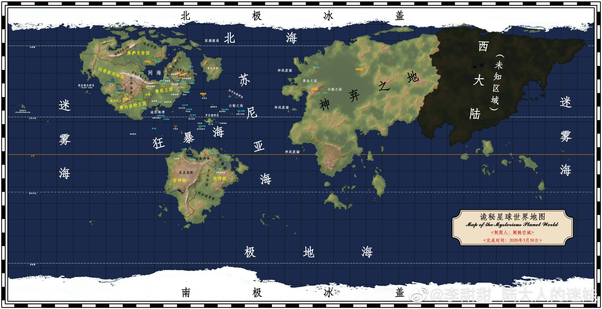

诡秘之主档案构建系统
灰雾纪元序章
在贝克兰德的浓雾里，有人戴着圆顶礼帽走过煤气灯下；
在特里尔的咖啡馆里，有人摊开一副 塔罗牌，喃喃低语；
在某处不为人知的灰雾之上，有一张古老的 青铜长桌，二十二把椅子静静等待来客就坐。
这里只有 源质、非凡特性 与 序列。
力量来自远古众神的尸骸，每一次魔药入喉，都是一次扮演——扮演那个曾真正掌握这份力量的人。
七大正神教会维持着表面的秩序，秘密组织在阴影里彼此倾轧，而星空之外，旧日与外神注视着每一颗发出非凡光芒的灵魂。
你准备好走入这片灰雾了吗？
「档案收录概况」
- 9大本土源质：3支柱级（混沌海/源堡/母巢）+ 6旧日级（永暗之河/灾祸之城/失序之国/暗影世界/知识荒野/光之钥）
- 22条神之途径 × 10序列 = 220阶完整描述，从序列9凡俗入门到序列0真神位格
- 10份外神恩赐源质 × 10条恩赐途径 × 10序列 = 100阶，附完整污染机制
- 61件封印物档案：0级17件 / 1级17件 / 2级10件 / 3级7件 + 特殊神奇物品10件
- 21个时间线篇章：上古纪元5篇 + 愚者主线8篇 + 宿命之环8篇
- 命途池88条 + 行囊池61条，按神话/传说/史诗/稀有/普通五档分级
「构建流程」
- 第一步：阅读世界图志，了解你将身处的舞台
- 第二步：查阅源质图鉴，理解力量的来源与代价
- 第三步：选择时间线篇章与入场节点
- 第四步：创建角色身份（基础信息、势力、背景）
- 第五步：自由构建能力体系——所有模块均为可选，凡俗或非凡完全由你决定
- 第六步：抽取命数与机缘行囊（两个抽取互相独立）
- 第七步：生成完整的非凡档案
「非凡特性三大铁律」
- 不灭定律：非凡特性不增不减，只在承载物之间转移，旧日陨落也不会让特性消失。
- 守恒定律：同一途径高序列特性多了，低序列特性就少；每条途径最多容纳 1个序列0 或 3个序列1，二者不能并存。
- 聚合定律：同途径与相邻途径的非凡者会被无意识地相互吸引，位格越高引力越强。
「位格层级官方排序」
世界图志

「世界结构」
整个世界由 物质星球 - 本土超凡维度 - 星空域外 三层结构组成。物质世界包含四块大陆与五大海域，本土超凡维度与现实重叠或连通，星空域外则是旧日与外神的领域。
源质图鉴
「档案性质」
此处收录世间所有 9大本土源质 × 22条途径 × 10序列 + 10份外神恩赐源质 × 10条恩赐途径 × 10序列 的完整资料，以及61件已知封印物档案。点击源质卡片展开详情，点击途径标题展开完整序列描述。
此页仅供阅读，能力实际选择在「能力」页中进行。
「外神恩赐警示」
恩赐途径不需要配制魔药，通过向对应外神 祈祷、献祭 即可获得能力。但使用恩赐会受到外神持续精神污染，序列越高污染越深。高序列者会被外神彻底回收意识，沦为无自我的眷族傀儡。
恩赐与本土魔药体系可以叠加共存（如极光会成员、阿蒙、亚当等），但同样承担污染代价。
「封印物分级标准」
- 0级：天使及以上位格，毁灭国家乃至世界的破坏力，仅教会最高层可接触
- 1级：圣者位格（序列4-3），教区主教/执事以上权限
- 2级：中序列位格（序列6-5），主教/小队队长以上可申请
- 3级：低序列位格（序列9-7），正式队员以上可申请
⚠️ 0级封印物 · 天使及以上位格
🔱 1级封印物 · 圣者位格
🔮 2级封印物 · 中序列位格
💎 3级封印物 · 低序列位格
⭐ 特殊神奇物品 · 民间流通
时间线篇章选择
「说明」
选择你想进入的时间线篇章，每个篇章都有独特的背景与事件。上古纪元为历史回溯线，可扮演该时代见证者；愚者主线（第一部）从1349年起，宿命之环（第二部）从1358年起。
⏱️ 选择入场节点
角色创建
📍 当前时间线归属
尚未选择篇章
基础信息
所属势力 无所属也可，凡俗市民请选「无所属/凡俗」
外貌与性情
能力构建
「自由组合」
以下所有模块均为可选。不选主修途径 = 你是凡俗；只选低阶仪式 = 你是边缘见证者；本土主修 + 外神恩赐并存 = 你走极光会/阿蒙路线。诡秘世界的真实在于：每个角色都是独一无二的组合。
🏛️ 主修源质 · 途径 · 序列 可选 · 所有源质均可选
9 大源质 + 22 条途径 + 10 序列任意组合。世界观铁律是"理论上每一条都有机会"，所以这里不做任何限制——你自己拍板。
① 选择源质
🌌 外神恩赐 可选 · 可与本土主修并存（如极光会路线）
⚠️ 使用恩赐会受到对应外神的持续精神污染。序列越高污染越深，高序列者最终会被外神彻底回收意识。可以与本土途径同时存在，但污染会叠加。
① 选择恩赐源质
🔱 持有的封印物 / 神奇物品 可选
勾选你携带的封印物。高级封印物建议通过命数解锁，自由勾选过多会引起教会注意。
📜 仪式魔法掌握 可选 · 凡俗也可掌握部分基础占卜
🫀 灵性根骨 可选
⚔️ 战斗本领 可选
🔮 神秘学问 可选
🧠 心性品格 可选
⚙️ 时代技能 可选
✨ 自创独门绝技 可选
最多可添加 0/5 项
命数与机缘
「抽取规则」
- 命数与行囊互相独立——可以只抽其中一个，或者两个都不抽，或者两个都抽
- 命数：每次抽 8 张，从中选 3 张；解锁支柱源质与剧情核心封印物
- 行囊：每次抽 6 张，从中选 2 张；包含武器/工具/护符/封印物等起始持有物
- 命数稀有度会影响行囊池的稀有度上限——抽到神话命数可解锁神话行囊
- 任何时候都可以点击按钮重抽，覆盖上一次结果
🎴 命数抽取
命运的纸牌正在洗牌……抽 8 选 3
🃏 命数结果
请从以下命数中选择 3 个（已选择：0/3）
🎒 行囊抽取
命运的行囊正在打包……抽 6 选 2
🎒 行囊结果
请从以下物品中选择 2 件（已选择：0/2）